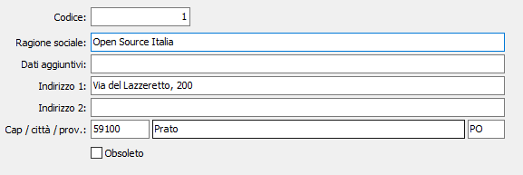

Luoghi di partenza
La tabella consente la creazione dei luoghi di partenza che vengono utilizzati dai programmi di emissione documenti di trasporto per la corretta indicazione del luogo di partenza.
I codici dei luoghi di partenza vengono inseriti nelle causali Ddt e fatture.
La compilazione della presente tabella di configurazione è obbligatoria per gli utenti che dispongono di più sedi operative per l’uscita delle merci.

CODICE: codice numerico di 5 caratteri per definire il numero progressivo di luogo di partenza nell’ambito della stessa Azienda. Sul campo sono attive le funzioni di ricerca sulla tabella stessa.
RAGIONE SOCIALE: campo alfanumerico di 50 caratteri per descrivere la ragione sociale del luogo di partenza.
DATI AGGIUNTIVI: campo alfanumerico di 50 caratteri per descrivere l’eventuale residuo della ragione sociale.
INDIRIZZO 1: campo alfanumerico di 50 caratteri per descrivere l’indirizzo.
INDIRIZZO 2: campo alfanumerico di 50 caratteri per descrivere l’eventuale residuo di indirizzo.
CAP: codice alfanumerico di 10 caratteri, presente nella tabella CAP, per indicare il codice postale del luogo di partenza. Sul campo sono attive le funzioni di ricerca (F9) sulla tabella stessa.
LOCALITÀ: campo alfanumerico di 50 caratteri per descrivere la località del luogo di partenza.
PROVINCIA: codice alfanumerico di 2 caratteri, presente nella tabella Province, per indicare la provincia del luogo di partenza. Sul campo sono attive le funzioni di ricerca (F9) sulla tabella stessa.